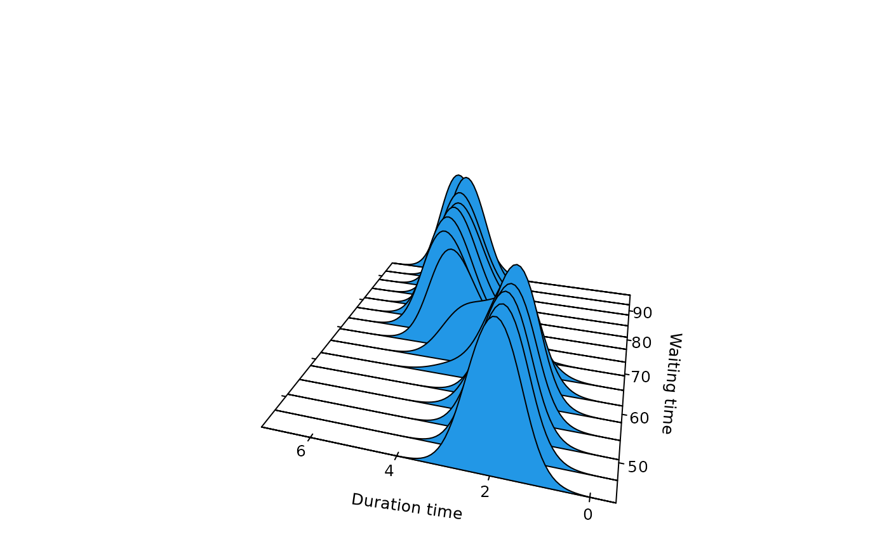
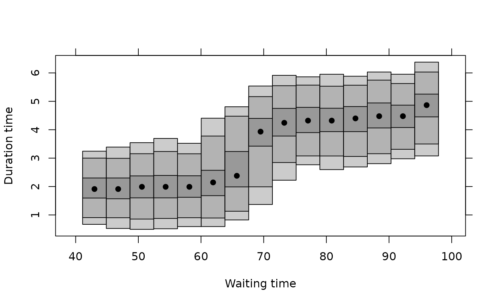

Calculates kernel conditional density estimate using local polynomial estimation.
Usage
cde(
x,
y,
deg = 0,
link = "identity",
a,
b,
mean = NULL,
x.margin,
y.margin,
x.name,
y.name,
use.locfit = FALSE,
fw = TRUE,
rescale = TRUE,
nxmargin = 15,
nymargin = 100,
a.nndefault = 0.3,
...
)Arguments
- x
Numerical vector or matrix: the conditioning variable(s).
- y
Numerical vector: the response variable.
- deg
Degree of local polynomial used in estimation.
- link
Link function used in estimation. Default "identity". The other possibility is "log" which is recommended if degree > 0.
- a
Optional bandwidth in x direction.
- b
Optional bandwidth in y direction.
- mean
Estimated mean of y|x. If present, it will adjust conditional density to have this mean.
- x.margin
Values in x-space on which conditional density is calculated. If not specified, an equi-spaced grid of
nxmarginvalues over the range of x is used. If x is a matrix, x.margin should be a list of two numerical vectors.- y.margin
Values in y-space on which conditional density is calculated. If not specified, an equi-spaced grid of
nymarginvalues over the range of y is used.- x.name
Optional name of x variable used in plots.
- y.name
Optional name of y variable used in plots.
- use.locfit
If TRUE, will use
locfit::locfit()for estimation. Otherwisestats::ksmooth()is used.locfit::locfit()is used if degree>0 or link not the identity or the dimension of x is greater than 1 even ifuse.locfit=FALSE.- fw
If TRUE (default), will use fixed window width estimation. Otherwise nearest neighbourhood estimation is used. If the dimension of x is greater than 1, nearest neighbourhood must be used.
- rescale
If TRUE (default), will rescale the conditional densities to integrate to one.
- nxmargin
Number of values used in
x.marginby default.- nymargin
Number of values used in
y.marginby default.- a.nndefault
Default nearest neighbour bandwidth (used only if
fw=FALSEandais missing.).- ...
Additional arguments are passed to locfit.
Value
A list with the following components:
- x
grid in x direction on which density evaluated. Equal to x.margin if specified.
- y
grid in y direction on which density is evaluated. Equal to y.margin if specified.
- z
value of conditional density estimate returned as a matrix.
- a
window width in x direction.
- b
window width in y direction.
- x.name
Name of x variable to be used in plots.
- y.name
Name of y variable to be used in plots.
Details
If bandwidths are omitted, they are computed using normal reference rules described in Bashtannyk and Hyndman (2001) and Hyndman and Yao (2002). Bias adjustment uses the method described in Hyndman, Bashtannyk and Grunwald (1996). If deg>1 then estimation is based on the local parametric estimator of Hyndman and Yao (2002).
References
Hyndman, R.J., Bashtannyk, D.M. and Grunwald, G.K. (1996) "Estimating and visualizing conditional densities". Journal of Computational and Graphical Statistics, 5, 315-336.
Bashtannyk, D.M., and Hyndman, R.J. (2001) "Bandwidth selection for kernel conditional density estimation". Computational statistics and data analysis, 36(3), 279-298.
Hyndman, R.J. and Yao, Q. (2002) "Nonparametric estimation and symmetry tests for conditional density functions". Journal of Nonparametric Statistics, 14(3), 259-278.
Examples
# Old faithful data
faithful.cde <- cde(faithful$waiting, faithful$eruptions,
x.name = "Waiting time", y.name = "Duration time"
)
plot(faithful.cde)

plot(faithful.cde, plot.fn = "hdr")

# Melbourne maximum temperatures with bias adjustment
x <- maxtemp[1:3649]
y <- maxtemp[2:3650]
maxtemp.cde <- cde(x, y,
x.name = "Today's max temperature", y.name = "Tomorrow's max temperature"
)
# Assume linear mean
fit <- lm(y ~ x)
fit.mean <- list(x = 6:45, y = fit$coef[1] + fit$coef[2] * (6:45))
maxtemp.cde2 <- cde(x, y,
mean = fit.mean,
x.name = "Today's max temperature", y.name = "Tomorrow's max temperature"
)
plot(maxtemp.cde)